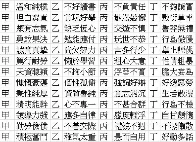

我也是個不正常的人啊 讀《滌，這個不正常的人》#1
2018年11月，在大選前和研究所學姊聊著公投的話題，她提到我一直在壓抑情緒，情感總是像涓涓細流一般，提醒我花一點時間去回溯童年記憶、探究原因，這是一切自我探索的起點。
我一直以為「我很正常」，但那些我都能判斷出是「不正常的反應」，像滾水的泡泡般不斷冒出，例如決定停修一門課時感到羞愧與罪惡感，必須不斷地告訴自己「那只是個選擇，無關對錯。」；在工作中連續犯錯時，會數算著「醜一、醜二、醜三」而害怕再犯，明明那真的沒什麼大不了。
而《滌，這個不正常的人》是炸彈，炸開了所有的底層記憶。
我也蒐集了很多無法忍受的「砰」
有一次你在樓梯口遇到一個搬床鋪的人，你無法與他錯身而過，你背貼著牆壁，面對著他等他經過。……這樣聽起來，滌變成「這個樣子」，似乎有一個分界點。(p139)
……似乎也是在二十三歲，有天他聽到一個很大的「砰」。很大的「砰」，他說他再也不能忍受了。那個「砰」並不是他遇到的第一個，而是第幾千幾百個「砰」。(p140)
那個令人無法忍受的「砰」，我也蒐集了很多很多。
其實遭遇事件是沒有關係的，但「那有什麼好在意的？」、「那是你的問題。」、「又沒關係。」才是每一個「砰」的來源，如無法與搬床鋪的人錯身一般，從那些他人看來的小事，收穫了很多否定和忽視。而我一直都在忍耐，還在忍耐。
同時，對於本質的否定，人們對於將其貼上負面標籤似乎視為理所當然，衝動行事、粗心大意、粗枝大葉、我行我素、缺乏恆心，如果想成為一個好學生，就要抹去這些錯誤的人格特質。從而，我一直努力地想要解決問題。（也有抵抗的時候，例如我似乎越來越我行我素了？）

我是一個必須被解決的問題
因為覺得「那些特質是錯誤的、害怕被否定」，所以我必須把那些特質藏好就不會被討厭，忍耐那些討厭的事、不表達需求就不會被否定。
以致當需要說出真實感受與需要的時候，會完全講不出來，「他會不會瞧不起我的夢想？他會不會覺得我的感情很可笑？當我說出我的不喜歡時，會不會被討厭、覺得我很難相處？」過於恐懼再次被否定，我一直在避免同樣的情況再次出現，我真的很擅長。避免與會輕易論斷他人的人交往、避免需要談論關於自身的場合，從來不說「我討厭什麼」、都說「我偏好什麼」。
所以當去年重要友人認為「我是壞掉的，並且該被修好」，實在太令人心碎了。即使我知道他愛我、他認為這對我好，他是個好人。
攀岩有一段時間在修復我對於人格特質的認知，如同身高或高或矮、柔軟度或軟或硬，在路線面前沒有絕對的好壞對錯，那只是一體兩面的；也學習辨識恐懼的本質、練習面對恐懼，練習失敗也沒有關係。（〈攀岩的啟示〉這篇竟然已經是一年半前寫的了……！）
大三暑假在花東帶營隊，某個晚上和營長兩人出去便利商店吃宵夜放風，當時我們還不熟，我選擇消夜時、說話時都隨和含糊而小心翼翼，但他要我選我喜歡的、總是耐心等待我的回應；某次和主管從宜蘭回台北的車上，我當我問他「我會不會很沒用？（所以可以輕易被取代）」時，他直切了當地說出「你很重要」；和學姊一起跑完離校手續後，他傳訊息和我說：「今天還好有你在。」
其實我需要的，只是感覺到被重視而已。
確定不會因為我的選擇（或猶豫）、偏好、麻煩而討厭我而已。
留言
電子郵件不會公開，只用來辨識留言者。第一次留言會先經過審核，之後同一個電子郵件的留言會直接顯示。本留言區以 Cloudflare Turnstile 防止垃圾留言。